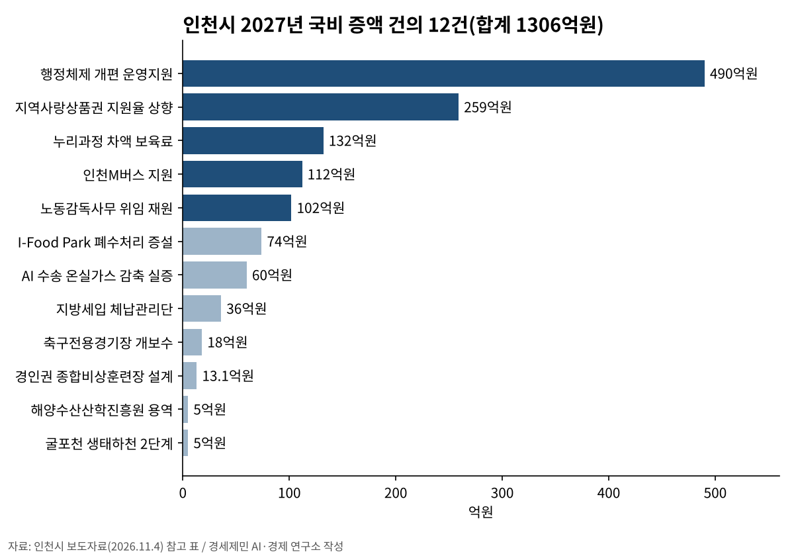
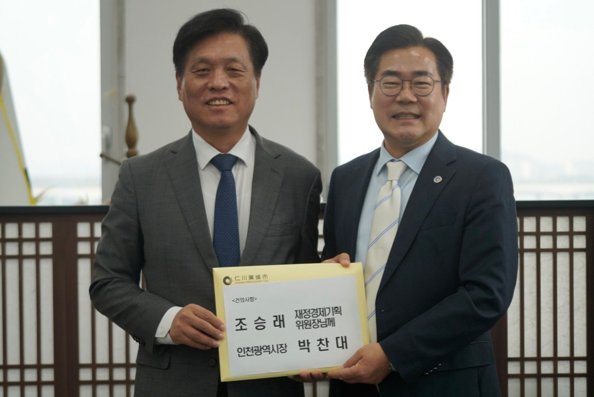

인천시 "국비 1306억 더"…노동감독관 인건비·인천e음·M버스
정부안 인천 국고보조금 7조863억 원, 역대 최대
30인 미만 사업장 노동감독 위임 재원 102억 원 요청
AI경제저널=김갑봉 기자 | 박찬대 인천시장이 4일 국회를 찾아 2027년도 정부 예산안보다 1306억 원 많은 국비를 요청했다. 박 시장은 이광재 예산결산특별위원장과 여야 간사, 주요 상임위원장을 만났다고 인천시가 밝혔다.
정부가 9월 국회에 낸 2027년도 예산안에는 인천시 국고보조금 7조863억 원이 담겼다. 인천시는 역대 최대라고 설명했다. 이번 증액 요청은 이 금액의 1.8%다.
박 시장은 국회 방문에 앞서 이날 오전 7시 30분 인천지역 국회의원들과 예산정책협의회를 열었다. 민선9기 출범 뒤 인천시와 여야 의원이 함께한 첫 자리다. 인천시는 국비 사업 10건, 법령 제·개정 과제 8건, 현안 16건을 건의했다.
행정체제 개편 490억 원이 가장 크다

증액 요청은 12개 사업이다. 가장 큰 것은 행정체제 개편 운영지원 490억 원으로 전체의 37.5%다. 정부안에는 반영되지 않았다. 인천시는 관련 법률에 재정지원 근거가 생긴 만큼 필수경비를 국비로 달라고 했다.
지역사랑상품권(인천e음) 발행 지원은 259억 원 증액을 요청했다. 국비 지원율을 3~9%에서 4~10%로 올려 국비 1009억 원을 반영해 달라고 했다. 정부안은 750억 원이다. 인천시에는 4%, 강화·옹진에는 8%가 적용된다. 인천시는 애초 5% 상향을 요청했다가 지방우대지수를 반영해 4%로 조정했다고 밝혔다.
경기도는 받고 인천은 못 받는 M버스 지원
인천M버스(광역급행버스) 지원 112억 원은 새로 요청한 사업이다. 광역급행버스는 정부 면허로 다닌다. 인천시는 경기도는 재정지원을 받는데 인천은 받지 못한다고 설명했다.
인천시는 인천을 다니는 14개 노선을 경기도처럼 준공영제로 바꿔 달라고 했다. 노선당 국비 8억 원씩 112억 원을 산출했다.
노동감독관 101명 인건비 102억 원
인천시는 「노동감독관 직무집행법」 제정으로 2027년부터 30인 미만 사업장 노동감독 사무가 시·도지사에게 위임된다고 설명했다. 노동감독권과 사후조치권이다. 여기에 드는 102억 원을 국비로 요청했다. 산출 근거는 기준인력 101명에 1인당 1억100만 원이다. 1억100만 원은 2026년 인천시 기준단가다.
고용노동부는 30인 미만 소규모 사업장 예방감독을 지방정부에 맡긴다고 설명해 왔다. 고소·고발 같은 신고사건과 수사가 필요한 분야는 위임에서 뺐다. 시행령 제정안은 7월 24일 입법예고됐다.
누리과정 차액 보육료 132억 원은 모든 시·도 공통 과제로 올렸다. 어린이집마다 다른 보육료 차액을 국비로 메워 완전 무상보육을 하자는 취지다. 지방세입 체납관리단 운영비 36억 원(국비 50%)도 요청했다.
폐수처리·온실가스·해양 안전교육

I-Food Park 공공폐수처리시설 증설에는 74억 원을 요청했다. 수도권 첫 식품전문 일반산업단지인 I-Food Park는 오폐수 유입량이 크게 늘었다고 인천시는 설명했다.
AI 기반 수송부문 온실가스 감축 실증 60억 원, 인천축구전용경기장 전광판 교체 18억 원도 건의했다. 경인권 종합비상훈련장 설계비 13억1천만 원, 해양수산산학진흥원 설립 용역비 5억 원, 굴포천 생태하천 2단계 용역비 5억 원도 담았다.
인천시는 여의도 중앙협력본부에 「국비 확보 상황실」을 두고 국회 심의를 지켜본다. 국회예산정책처는 정부가 9월 3일 낸 2027년도 예산안 총지출을 820조9천억 원으로 분석했다.
박 시장은 "앞으로 진행될 국회 심의 과정에서 인천의 몫이 반영되기 위해 노력하겠다"고 말했다.
참고문헌
- 국회예산정책처, 「2027년도 예산안 총괄 분석」, 2026.10.30., https://eiec.kdi.re.kr/policy/domesticView.do?ac=0000207966
- "인천시, 2027년도 국비 확보 위해 국회 방문 총력 대응", 인천시(재정담당관), 2026.11.4., https://www.incheon.go.kr/IC010205/view?repSeq=DOM_0000000015886684
- "인천시-인천지역 국회의원 예산정책협의회 개최", 인천시(정책기획관), 2026.11.4., https://www.incheon.go.kr/IC010205/view?repSeq=DOM_0000000015888351
- "「노동감독관 직무집행법 시행령」 제정안 입법예고", 고용노동부(근로감독기획과), 2026.7.24., https://www.moel.go.kr/info/lawinfo/lawmaking/view.do?bbs_seq=20260700839
- "[정책 바로보기] 고용부 '지방정부 감독·수사 전문성있고 적법하게 이루어지도록 준비 철저'", 정책브리핑 정책뉴스, 2026.3.27., https://www.korea.kr/news/policyNewsView.do?newsId=148961598
[사진 출처]
- [사진1·2] 인천광역시 보도자료 「인천시, 2027년도 국비 확보 위해 국회 방문 총력 대응」 사진, 공공누리 제1유형, 2026.11.4., https://www.incheon.go.kr/IC010205/view?repSeq=DOM_0000000015886684
관련기사
- 강화남단 경제자유구역, 지정 요청 11개월째…2차 발전계획에 담는다
- 인천시 "국비 1306억 더"…노동감독관 인건비·인천e음·M버스
- 인천시, 천원택배 운영·배송체계 일원화…무인 집화·간편결제 도입
- 박인서 인천항만공사 사장 취임…"미해결 현안 푸는 해결사 되겠다"
저작권자 © AI경제저널 무단전재 및 재배포, AI학습 및 활용 금지